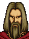

ワールドマップ
北半島を解放したセリスたちは
ミーズの城を前進基地として、Having liberated the northern peninsula, Celice and his companions made Miloah Castle their forward base,
今後の進むべき道をもさくしていた。and set about charting the path they should take from here on.
ミーズ城から先は険しい山々が連なる
竜騎士の国、トラキアである。Beyond Miloah Castle lay a chain of harsh mountains, the land of the dragon knights: Thracia.
トラキア王トラバントは
アルヴィス皇帝と結び、King Travant of Thracia had allied himself with Emperor Arvis,
グランベル帝国の唯一の同盟者として
この辺境の地を統治していた。ruling this remote region as the sole ally of the Grannvale Empire.
そして、王都トラキアには二人の子供
アリオーン王子とアルテナ王女を、In the Thracian capital he stationed his two children, Prince Arion and Princess Altena;
カパトギア城にはトラキアの盾との
異名を持つ名将ハンニバルを、at Capathogia Castle, the renowned general known as the Shield of Thracia, Hannibal;
ルテキア城には王の腹心である
ディスラー将軍を、at Lutecia Castle, the king's trusted aide, General Dislar;
グルティア城には帝国より派遣された
暗黒教団のジュダ司教を配して、and at Grutia Castle, Bishop Judah of the dark cult, dispatched from the Empire —
解放軍との全面対決を
準備していたのである。and with them, he prepared for all-out confrontation with the Liberation Army.
トラキアの人々はセリスたちを
侵略者と恐れ、The people of Thracia feared Celice and his companions as invaders,
みずから武器を取って戦おうとしていた。and were ready to take up arms themselves to fight them.
この戦いに正義はあるのか？
誰のためにわれらは戦うのか？Was there any justice in this fight? For whose sake were they fighting?
それは、セリスたちにとって
初めての試練であった・・・。For Celice and his companions, this was their first true trial...
Opening
(アルテナがトラキア城へ戻ってくる)
(トラキア)

アルテナ！ どうしたというのだ！
なぜマンスターを攻撃しなかった！？(Travant): Altena! What is the meaning of this! Why didn't you attack Manster!?

父上・・・ですが・・・(Altena): Father... but...
いいわけなどききたくないわ！
アルテナ、わしを見くびるなよ(Travant): I don't want to hear excuses! Altena, don't you dare take me for a fool.
おまえは女でありながらも武技にひいで
アリオーンと共にわしの手足として
働いてくれるものと期待しておった(Travant): Even though you're a woman, you excel at the art of war, and I expected you, together with Arion, to serve as my hands and feet.
ところがどうだ、
わしの命令を無視し、部下だけを失って
のこのこと帰ってくるとは、(Travant): And yet, look at this — you ignored my orders, lost your men for nothing, and came crawling back here,
まったく・・・失望したぞ(Travant): I'm... utterly disappointed in you.
申し訳ありません、ですが、父上！
他国の民をしいたげて
豊かになることが、(Altena): I'm sorry, but, father! Is it really happiness for the people of Thracia
トラキアの民にとって
幸せといえるのですか、
父上のなさりようは、あまりにも・・・(Altena): to grow rich by oppressing the people of other nations? Father, what you're doing is simply too...

だまれ、アルテナ
おまえなどが口を挟むことではない
今はだまって、父上に従え！(Arion): Silence, Altena. This isn't something for the likes of you to speak up about. Be quiet and obey father for now!
父上、アルテナはまだ若い
実戦を前にして
気がたかぶっているのでしょう(Arion): Father, Altena is still young. Facing real battle for the first time, her emotions must simply be running high.
今回だけは、どうか許してやって下さい(Arion): Please, just this once, forgive her.
アリオーン、
お前がそうやってあまやかすから、
アルテナがつけ上がるのだ(Travant): Arion, it's because you coddle her like this that Altena gets so full of herself.
アルテナ、もう一度だけチャンスをやる
竜騎士団を率いて
ミーズを取り戻してこい(Travant): Altena, I'll give you one more chance. Lead the dragon knight corps and retake Miloah.
今度失敗すれば、娘とて容赦はせぬぞ
わかったか！(Travant): If you fail again this time, I won't show mercy even to my own daughter. Understood?
はい・・・・・(Altena): Yes.........
(アルテナ出陣)
ふっ、血とは恐ろしいものよ・・・
あいつは、わしをきらっておる・・・(Travant): Heh, blood is a frightening thing... that girl hates me...
父上、アルテナはまだ子供なのです
父上にあまえて、
感情のままに憎まれ口を・・・(Arion): Father, Altena is still a child. Spoiled by you, she just lashes out with whatever resentful words come to mind...
もうよい・・・私はカパトギア城へ行く
ハンニバルの奴め、
私のやり方が不服のようだ(Travant): Enough of that... I'm going to Capathogia Castle. That Hannibal fellow seems unhappy with my methods.
奴が裏切らないように、
手をうっておかねばならぬ(Travant): I need to take precautions, in case he betrays us.
・・・父上はおびえられている・・・
いったい、どうされたというのだ・・・(Arion): ...father is afraid... whatever has happened to him...
(トラバントがカトパギア城へ向かう)
(カトパギア)
ハンニバル将軍、
反乱軍がミーズ城を占拠した
すでにアルテナが攻撃に向かっている(Travant): General Hannibal, the rebels have seized Miloah Castle. Altena is already moving to attack.
お前も装甲騎士団を出撃させろ(Travant): You too, send out your armored knight corps.

陛下、何度も申し上げているように
この戦いは無意味です(Hannibal): Your Majesty, as I've said many times already, this fight is meaningless.
解放軍とは休戦し、
今は国力をたくわえるべきです(Hannibal): We should make peace with the Liberation Army and focus on building up our national strength for now.
帝国と手を組むなどもってのほか
それでは民を敵に回すことになります(Hannibal): Joining hands with the Empire is out of the question — it would turn the people against us.
ねぼけたことを言うな！
奴らは、わが部下を殺し、
ミーズ城を奪ったのだぞ！(Travant): Don't talk nonsense! They killed my men and stole Miloah Castle!
いまさら休戦などできるものか！(Travant): There's no making peace now!
そうですか・・・いたしかたありませんな(Hannibal): I see... there's no helping it, then.
裏切るつもりではあるまいな、
ハンニバル(Travant): You're not planning to betray me, are you, Hannibal?
私も多少は名の知れた武人だ
裏切りなどあろうはずがない！(Hannibal): I am a warrior of some renown myself. There's no way I would ever betray you!
そうか、では、
その忠義のほどを見せてもらおう(Travant): Is that so. Then, let me see proof of that loyalty.
戦いが終わるまで、
お前の息子はわしがあずかる(Travant): Until this battle is over, I'll be keeping your son with me.
トラバント王！
私を信用して下さらないのですか！(Hannibal): King Travant! Do you not trust me at all!?
裏切る気がないなら、
息子の命を心配する必要もあるまい(Travant): If you have no intention of betraying me, then you have no reason to worry about your son's life.
なんと・・・(Hannibal): What in the world...
ハンニバルの息子を連れてこい！(Travant): Bring Hannibal's son here!

父上・・・(Coirpre): Father...
コープル・・・すまぬ・・・(Hannibal): Coirpre... I'm sorry...
心配するな
この戦いが終われば返してやる(Travant): Don't worry. Once this battle is over, I'll give him back.
しかし、ハンニバルよ
実の子でもあるまいに、
それほどこの子が可愛いか(Travant): But Hannibal, he isn't even your real child, is he — and yet you dote on him this much?
コープルは私の宝だ
血のつながりなど関係ない・・・(Hannibal): Coirpre is my treasure. Blood ties have nothing to do with it...
はっはっは、トラキアの名将も、
子供には弱いとみえるな
では、頼んだぞ、ハンニバル！(Travant): Hahaha, so even Thracia's great general has a weakness for children. Well then, I'm counting on you, Hannibal!
(ハンニバル出陣)
(トラバントがルテキア城へ向かう)
(ルテキア)
ディスラー、戦いが始まるぞ
城の守備にぬかりはないか(Travant): Dislar, the battle is about to begin. Is the castle's defense without fault?

これは、トラバント陛下
ようこそ、おこしくださいました(Dislar): Why, Your Majesty Travant, welcome. What an honor to have you visit.
ルテキア城の備えは万全です、
ご安心ください(Dislar): Lutecia Castle's defenses are perfect — please, rest assured.
期待しているぞ
カパトギアのハンニバルは信用できん(Travant): I'm counting on you. That Hannibal of Capathogia can't be trusted.
奴の息子を人質にとった
このルテキア城で、お前が見はっていろ(Travant): I've taken his son hostage. Keep watch over him here at Lutecia Castle.
はい、おまかせください
しかし、もしもハンニバルが
裏切るようなことがあれば・・・(Dislar): Yes, leave it to me. But, should Hannibal ever try to betray us...
そのときは、こいつを殺せ
子供だからといって、容赦はするな(Travant): At that time, kill the boy. Just because he's a child, show no mercy.
はっ、承知いたしました(Dislar): Yes sir, understood.
(トラバントがグルティア城へ向かう)
(グルティア)
ジュダ殿、かねてからの盟約どおり、
アルヴィス皇帝は
援軍をよこすのだろうな？(Travant): Lord Judah, as per our long-standing pact, Emperor Arvis will be sending reinforcements, won't he?
トラバント王も用心深い方ですな
安心されよ、すでに帝国騎士団が
こちらに向かっています(Judah): King Travant, you really are a cautious man. Rest assured — the Imperial Knights are already on their way here.
そうか、ならばよし
この城の守りは、貴公におまかせする(Travant): I see, then good. I'll leave the defense of this castle in your hands.
反乱軍に足元をすくわれぬよう
注意されよ！(Travant): Watch out, so the rebels don't catch you off guard!
(トラバントがトラキア城へ戻る)
(ミーズ)
トラキアから竜騎士団が出たようだ
いよいよだな、セリス、油断をするなよ(Levin (Strategist)): It seems the dragon knight corps has set out from Thracia. This is it, Celice — don't let your guard down.

だけどレヴィン
私たちの敵は帝国のはず
こんな戦いに意味があるのだろうか(Celice): But Levin, our enemy is supposed to be the Empire. Is there really any meaning to this fight?
意味があるかないかは、
おまえの戦い方しだいだ(Levin (Strategist)): Whether there's meaning in it or not depends entirely on how you fight it.
戦いはもはやさけられぬ
いまさら後へは戻れない(Levin (Strategist)): This battle can no longer be avoided. There's no turning back now.
だが、マンスターの山で
私たちを見ていたあの竜騎士
・・・とても悲しそうだった(Celice): But that dragon knight who watched us from the mountains of Manster... she looked so terribly sad.
あの人とも
戦わねばいけないのかと思うと・・・(Celice): To think we might have to fight someone like that...
セリス！ いいかげんにしろ！！
これは戦争なんだ(Levin (Strategist)): Celice! Enough of that!! This is war.
戦うのがイヤになったのなら
ティルナノグに帰れ！(Levin (Strategist)): If you've grown sick of fighting, then go back to Tirnanog!
レヴィン・・・・・(Celice): Levin.........
カパトギア軍1ターン目
(カパトギア城近く)
む・・・反乱軍が進軍をはじめたようだな(Hannibal): Hmm... it seems the rebels have begun their advance.
ハンニバル様、
攻撃命令をお出しください(Kanatz): Lord Hannibal, please give the order to attack.
いや、待て、城の守備にてっするのだ
無用な戦いは、さけねばならん(Hannibal): No, wait. We'll focus solely on defending the castle. We must avoid any needless fighting.
しかし、それでは・・・(Kanatz): But, in that case...
息子のことはわかっておる
・・・・・だがな、
・・・とにかくしばらくは様子を見よう(Hannibal): I know about my son's situation... .........but, in any case, let's watch how things go for now.
カナッツ、悪いが、
おまえは城を守ってくれ(Hannibal): Kanatz, sorry, but I need you to guard the castle.
はっ、おおせのままに！(Kanatz): Yes sir, as you command!
トラキア軍1ターン目
(トラキア城近く)
これより、ミーズ城を奪回する
全軍、反乱軍を攻撃せよ！(Altena): From here, I will retake Miloah Castle. All troops, attack the rebels!
ルテキア軍2ターン目
(ルテキア城)
このトシにもなって
ガキのおもりとはな・・・(Dislar): Who'd have thought, at my age, I'd end up babysitting some brat...
ディスラーさん、ぼくを返してよ
父さんは戦いたくないんだ(Coirpre): Mister Dislar, please let me go. My father doesn't want to fight.
ぼくのために
無理をして戦ってほしくない！(Coirpre): I don't want him to force himself to fight for my sake!
うるさい！ だまっていろ！！(Dislar): Quiet! Be silent!!
ヤツもトラキアの盾とまで言われた武人
今更にげようなどと、かたはらいたいわ
最後まで我らと共に戦ってもらうぞ！(Dislar): That man was once called the Shield of Thracia — for him to try to run away now would be laughable. He'll fight alongside us to the very end!
とうさん・・・ごめんね(Coirpre): Father... I'm sorry.
会話（ファバル→パティ）

おい、パティ！
おまえ、まだ盗みを働いているのか！(Fabal): Hey, Patty! Are you still stealing things!?

うん、たまにちょこっとね(Patty): Yeah, now and then, just a little.
いいかげんにしろよ
いくら敵から盗むと言っても、
俺はイヤだぜ(Fabal): Enough already. No matter how much you say it's from the enemy, I don't like it.
あたしだって
好きでしてるわけじゃないわ(Patty): It's not like I do it because I want to, you know.
でもさ、解放軍の台所をおもうと
しかたないでしょう！(Patty): But when I think of the Liberation Army's finances, there's no helping it!
だけどな・・・
「海賊の子はやっぱり盗賊か」とか言って
おもしろがるヤツもいるんだ(Fabal): But still... there are people out there who find it amusing, saying things like "a pirate's child really is a thief after all."
もちろん俺、ぶっとばしてやったけど・・・(Fabal): Of course, I punched them out, but...
言いたい人には言わせておけばいいの、
あたしは気にしない(Patty): Let those who want to talk, talk — I don't care.
だってあたしたちの母さん、
聖戦士ウルの血を引く戦士だったのよ(Patty): Because our mother was a warrior descended from the blood of the holy warrior Ulir, you know.
その話をレヴィンさんからきいたとき、
あたしうれしくて涙が出てきちゃった(Patty): When I heard that story from Levin, I was so happy I cried.
うん、俺もさ・・・
だって俺達、孤児だったし、
ずっとみじめに暮らしてきたから(Fabal): Yeah, me too... I mean, we were orphans, and we'd lived such a miserable life all this time.
まさか母さんが
そんな高貴な人だとは思わなかった
パティは母さんのこと、おぼえてるか？(Fabal): I never imagined mother was someone so noble. Patty, do you remember anything about mother?
ううん、ぜんぜん・・・お兄ちゃんは？(Patty): No, nothing at all... what about you, brother?
俺は・・・少しだけ・・・
とてもきれいでさ・・・やさしい人だった・・・(Fabal): I... just a little... she was so beautiful... and such a kind person...
それで母さんは・・・
ブリギッド母さんは死んじゃったの？(Patty): So mother... did Mother Brigid die?
それはわからない
パティ、この戦争が終わったら
二人で捜しに行こうよ(Fabal): I don't know that. Patty, once this war is over, let's go search for her together.
ブリギッド母さん・・・そして・・・
まだ、なまえもわからない父さんをさ・・・(Fabal): Mother Brigid... and... our father too, whose name we still don't even know...
(パティ、LUK+1)
会話（アサエロ→デイジー）
おい、デイジー！
おまえ、まだ盗みを働いているのか！(Asaello): Hey, Daisy! Are you still stealing things!?
うん、たまにちょこっとね(Daisy): Yeah, now and then, just a little.
いいかげんにしろよ
いくら敵から盗むと言っても、
俺はイヤだぜ(Asaello): Enough already. No matter how much you say it's from the enemy, I don't like it.
あたしだって
好きでしてるわけじゃないわ(Daisy): It's not like I do it because I want to, you know.
でもさ、解放軍の台所をかんがえると
しかたないでしょう！(Daisy): But when I think about the Liberation Army's finances, there's no helping it!
だけどなぁ・・・(Asaello): But still...
それにコノートに残してきた子供達にも
仕送りをしなくっちゃいけないし
あたしも大変なのよ(Daisy): And besides, I have to send money to the children I left behind in Conote too — it's hard for me too, you know.
うん、そうだな・・・
あいつら、元気でやってるかな(Asaello): Yeah, that's true... I wonder if they're doing alright.
アサエロも協力してよね
闘技場で賞金を稼いでも、
ムダづかいしないでよ！(Daisy): Asaello, you'd better pitch in too. Even if you win prize money at the arena, don't go wasting it!
げっ、これはやぶへびだったかな・・・(Asaello): Ugh, I think that backfired on me...
(デイジー、LUK+1)
会話（リーフ→アルテナ）

待って下さい！ 姉上！！(Leaf): Please wait! Sister!!
姉上だと！？ ・・・おまえは誰だ！
なぜ私を姉と呼ぶ！(Altena): Sister, you say!? ...who are you! Why are you calling me your sister!
私は・・・レンスターのリーフです(Leaf): I'm... Leaf of Leonster.
リーフ？ そうか、
おまえがレンスターの王子なのだな(Altena): Leaf? I see, so you're the prince of Leonster.
私はトラバントの娘、アルテナだ
ねぼけてもらってはこまるな(Altena): I am Travant's daughter, Altena. Please don't say such sleepy nonsense.
あなたはわが両親、
キュアンとエスリンの子だ
十七年前、二人はトラバントに殺された(Leaf): You are the child of my own parents, Quan and Ethlyn. Seventeen years ago, the two of them were killed by Travant.
幼かった私の姉は、
レンスターの家宝ゲイボルグとともに
行方不明になった(Leaf): My sister, who was still young at the time, went missing, along with Leonster's treasure, the Gaebolg.
あなたが手にしているその槍、
それこそが
レンスターのゲイボルグです(Leaf): That lance you're holding right now — that is Leonster's Gaebolg.
なんだと！？ (Altena): What did you say!?
では、私が父だと信じていた人は
実の父のかたきだったと言うのか・・・
まさか・・・そんな・・・(Altena): Then, the man I believed to be my father was actually my real father's enemy... surely not... that can't be...
私を見て下さい
私が言ったことがウソかどうかは、
見ていただけばわかるはず(Leaf): Please, look at me. Whether what I've said is a lie or not — you should be able to tell just by looking.
姉上、どうか・・・(Leaf): Sister, please...
くっ・・・なぜだ！？
なぜおまえの言葉を
ウソだと言いきれない！！(Altena): Ngh... why!? Why can't I say your words are a lie!!
姉上・・・！！(Leaf): Sister...!!
待て！ ・・・父上に確かめてくる
すべてはそれからだ！！(Altena): Wait! ...I'm going to go confirm this with father. Everything starts from there!!
(アルテナがトラキア城へ戻る)
(トラキア)
アルテナ、いったいなんのつもりだ
またもや部下達を置き去りにして
一人で逃げ帰ってくるとは！(Travant): Altena, what on earth do you think you're doing — abandoning your men again and fleeing back here alone!
父上！ おききしたいことがあります
私が父上の娘ではないというのは、
本当ですか！？(Altena): Father! There's something I need to ask you. Is it true that I'm not really your daughter!?
私はキュアン王の娘なのですか！(Altena): Am I King Quan's daughter!
フッ・・・ついに知ったか
まあ、よかろう
いずれこんな日もくると思っていた(Travant): Heh... so you've finally learned the truth. Well, fine — I always knew a day like this would come.
確かにおまえはキュアンの娘だ
だがな、それが何だというのだ(Travant): You are indeed Quan's daughter. But so what?
お前を育ててやったのは、このわしだ
その事実に変わりはあるまい(Travant): It was I who raised you. That fact doesn't change, does it.
・・・では、私の本当の両親は、
父上、あなたが・・・(Altena): ...then, my real parents — father, you...
ふふふ、そうだ、おまえの両親、
キュアンとエスリンはわしが殺した
しかし、それがどうしたというのだ？(Travant): Hehehe, that's right. Your real parents, Quan and Ethlyn, I killed them myself. But what of it?
戦争とは殺し殺されるもの
いまさらそんなことを言っても始まるまい(Travant): In war, one kills and is killed. There's no point in bringing that up now.
くっ・・・
ゆるせない、私をだまして・・・
父上！ ・・・いや、トラバント！！(Altena): Ngh... I can't forgive this, deceiving me like this... Father! ...no, Travant!!
よせ！ アルテナ！(Arion): Stop it! Altena!
兄上！ 止めるな！
私はこの男を殺す
誰にも邪魔はさせない！(Altena): Brother! Don't try to stop me! I will kill this man. I won't let anyone get in my way!
そうはいかない！
父上に刃向かうなら、
この私が相手になる！(Arion): I won't allow that! If you're going to raise your blade against father, then I will be the one to face you!
ま、待て！
私は兄上とは戦えない！！(Altena): W-, wait! I can't fight you, brother!!
もはやおそいな・・・
死ねっ、アルテナ！(Arion): It's too late for that now... die, Altena!
あ、兄上・・・・・(Altena): A-, brother.........
・・・アリオーン
アルテナを殺したのか？
なにもそこまでせずともよかろうに・・・(Travant): ...Arion. Did you kill Altena? You didn't need to go that far...
まあ、よい
アリオーンよ、こうなればわしが出る
もはやそれしかあるまい(Travant): Well, never mind. Arion, with things as they are, I'll have to step in myself. There's no other way left now.
城の守りはおまえに頼む(Travant): I entrust the castle's defense to you.
おまかせください、父上(Arion): Leave it to me, father.
おまえには、この槍を預けておく
よいな、トラキアを守るのだ(Travant): I'll leave this lance in your care. Understand, you must protect Thracia.
父上、
これはグングニルの槍ではありませんか(Arion): Father, isn't this the lance Gungnir?
これから出陣されようかというときに
どうしてこれを？
まさか・・・父上？(Arion): Just as you're about to go into battle yourself, why would you hand this to me? Could it be... father?
もういい、わしはつかれたのだ
あとはおまえの好きにせよ
おまえならば、奴らも憎んではおらぬ(Travant): That's enough, I'm tired. From here, do as you see fit. They surely don't hate you as they hate me.
彼らと休戦せよと？
それは同意しかねます！(Arion): Are you telling me to make peace with them? I can't agree to that!
だから好きにせよと言っている
ただし、民をこれ以上、苦しめるな
わしの願いはそれだけだ(Travant): That's why I said do as you see fit. Only, don't make the people suffer any more than this. That's my only wish.
では、さらばだ、アリオーン！(Travant): Well then, farewell, Arion!
父上・・・(Arion): Father...
(トラバント出陣)
Altena: battle quote
やめろ！
お前などにこの私は倒せない！(Altena): Stop! The likes of you cannot defeat me!
アルテナ撃破時
兄上・・・アリオーン兄様・・・(Altena): Brother... brother Arion.........
(トラキア軍フェーズ)
(トラキア)
父上・・・アルテナが！
・・・戦死いたしました(Arion): Father... Altena... ...has fallen in battle.
そうか・・・まあ、よい
アリオーンよ
こうなればわしが出る(Travant): I see... well, never mind. Arion, with things as they are, I'll have to step in myself.
もはやそれしかあるまい
城の守りはおまえに頼む(Travant): There's no other way left now. I entrust the castle's defense to you.
おまかせください、父上(Arion): Leave it to me, father.
おまえには、この槍を預けておく
よいな、トラキアを守るのだ(Travant): I'll leave this lance in your care. Understand, you must protect Thracia.
父上、
これはグングニルの槍ではありませんか(Arion): Father, isn't this the lance Gungnir?
これから出陣されようかというときに
どうしてこれを？
まさか・・・父上？(Arion): Just as you're about to go into battle yourself, why would you hand this to me? Could it be... father?
もういい、わしはつかれたのだ
あとはおまえの好きにせよ
おまえならば、奴らも憎んではおらぬ(Travant): That's enough, I'm tired. From here, do as you see fit. They surely don't hate you as they hate me.
彼らと休戦せよと？
それは同意しかねます！(Arion): Are you telling me to make peace with them? I can't agree to that!
だから好きにせよと言っている
ただし、民をこれ以上、苦しめるな
わしの願いはそれだけだ(Travant): That's why I said do as you see fit. Only, don't make the people suffer any more than this. That's my only wish.
では、さらばだ、アリオーン！(Travant): Well then, farewell, Arion!
父上・・・(Arion): Father...
(トラバント出陣)
トラバント初戦時
はっはっは、
反乱軍のざこどもよ
わしがトラバントだ(Travant): Hahaha, you rebel small fry, I am Travant.
めいどのみやげに、
よくおぼえておけよ！(Travant): As a parting gift for the afterlife, remember that well!
トラバント撃破時
トラキアよ・・・
わが愛しき大地よ・・・ぐふっ(Travant): Thracia... my beloved land... guh...
セリス⇔アルテナ
セリス様、
私はレンスターのキュアンの娘、
アルテナです(Altena): Lord Celice, I am Altena, daughter of Quan of Leonster.
弟のリーフ王子から真実をきかされて
もはやあなた達とは戦えなくなりました
どうか私も解放軍の一員にお加え下さい(Altena): Having learned the truth from my younger brother, Prince Leaf, I can no longer fight against you. Please, let me join the Liberation Army too.
アルテナ王女！？
ああっ、あなたが、
リーフ王子の姉上なのですね！(Celice): Princess Altena!? Ah, so you're Prince Leaf's elder sister!
彼から話をきいて待っていたのです
ありがとう、
王子もきっと喜ぶことでしょう(Celice): I heard the story from him, and I've been waiting. Thank you — I'm sure the prince will be overjoyed too.
よく決心して下さいました(Celice): Thank you for making such a brave decision.
・・・まだ信じられないほどです
でも、リーフ王子の目を見たときに
全てを悟りました(Altena): ...I still can hardly believe it myself. But the moment I looked into Prince Leaf's eyes, I understood everything.
あれは、やさしかった父の眼差し・・・(Altena): Those were the same gentle eyes as my father's...
そして、母の腕に抱かれていた
少女のころの記憶が
ハッキリとよみがえってきました(Altena): And memories of being a little girl, held in my mother's arms, came flooding back to me, clear as day.
でも、トラバント王は
いったい、どういうつもりだったのでしょう(Celice): But what in the world was King Travant thinking?
ご両親を殺しておきながら
まだ幼かったあなたを
国に連れ帰るなんて・・・(Celice): To kill your parents, and yet still bring you, so young at the time, back to his own country...
兄には、ゲイボルグの槍を
自分のために使いたかったのだと
言っていたそうです(Altena): I heard that my brother wanted to use the lance Gaebolg for himself.
そのために私を・・・(Altena): And that's why he took me...
利用しただけだと？(Celice): You mean, he only used you?
それは・・・私にもわかりません
トラバントは恐ろしい男ですが
私は父親だと信じていました・・・(Altena): That... I don't even know myself. Travant is a frightening man, but I believed he was my father...
トラバント王・・・
よくわからない人ですね(Celice): King Travant... he's a hard man to understand.
セリス様、お願いがあります
アリオーンは・・・アリオーン王子だけは
助けてほしいのです(Altena): Lord Celice, I have a request. Arion — please, spare at least Prince Arion's life.
ええ、王子は立派な人だときいています
私も戦いたくはありません
でも、彼はきいてくれるでしょうか(Celice): Yes, I've heard he's an admirable man. I don't want to fight him either. But will he listen to us?
私がもう一度、説得してみます
だから、もう少しだけ時間を下さい！(Altena): Let me try to persuade him once more. So please, just give me a little more time!
会話（コープル→ハンニバル）
父さん、ぼくだよ、コープルだよ
もう戦うのはやめて！(Coirpre): Father, it's me, Coirpre. Please, stop fighting now!
解放軍がすでに
ルテキア城を制圧したんだ！(Coirpre): The Liberation Army has already taken Lutecia Castle!
コープル！？
おまえ・・・無事だったのか！(Hannibal): Coirpre!? You... you're safe!
うん、父さん
ぼくは、セリス様の解放軍に加わりたい(Coirpre): Yeah, father. I want to join Lord Celice's Liberation Army.
トラキアはもう、
昔のトラキアとはちがう
ぼくは皆のために戦いたいんだ！(Coirpre): Thracia isn't the Thracia of old anymore. I want to fight for everyone!
そうか・・・おまえも大人になったのだな
わかった、コープル
私もセリス様とともに戦おう(Hannibal): I see... so you've grown up too. Understood, Coirpre. I'll fight alongside Lord Celice as well.
うん、父さん！
トラキアを解放し、
みんなで帝国に立ち向かうんだ！(Coirpre): Yeah, father! Let's liberate Thracia and stand up against the Empire together, everyone!
会話（セリス→ハンニバル）
ハンニバル将軍ですね
つまらぬ戦いをしてしまいました
おわびいたします(Celice): General Hannibal. We ended up fighting a pointless battle. My deepest apologies.
セリス殿か・・・
息子を助けてくれたそうだな
わしこそ、わびねばならぬ・・・(Hannibal): Lord Celice... I hear you saved my son. It is I who should be apologizing...
将軍はトラキアの盾とまで言われた
名誉ある武人です(Celice): General, you are an honored warrior, known as the Shield of Thracia.
それを人質を取ってまで戦わせるとは・・・
トラバント王のやり方は卑劣すぎます(Celice): To force you into battle by taking a hostage... King Travant's methods are far too dishonorable.
あの男も哀れなのだ
人を裏切り続けてきたから
誰も信じることができなくなった(Hannibal): That man is pitiable too. Having betrayed others again and again, he's become unable to trust anyone.
だがあれでは、
人の心はついては行くまい・・・(Hannibal): But doing things that way, people's hearts will never follow him...
将軍、どうか若い私たちを
おみちびきください
私たちには将軍の力が必要なのです(Celice): General, please, guide us young ones. We need your strength.
うむ、
わしのような老人でよければ力になろう
セリス殿、よろしくたのむぞ(Hannibal): Hmm, if an old man like me can be of use, I'll lend my strength. Lord Celice, I'm counting on you.
会話（リーン→コープル）

あなたはコープルでしょう(Lene): You must be Coirpre.
あっ、う、うん・・・(Coirpre): Ah, y-, yeah...
コープルも孤児なんだってね
小さいころの記憶はないの？(Lene): I hear you're an orphan too, Coirpre. Don't you have any memories from when you were small?
うん、ぜんぜんない
父さんがダーナの街でひろってくれた時
ボクはまだ赤んぼうだったって・・・(Coirpre): No, none at all. When father found me in the streets of Darna, I was still just a baby, or so I'm told...
あなたもダーナで！？(Lene): You too, in Darna!?
リーンさんはダーナを知っているの？(Coirpre): Miss Lene, do you know Darna?
わたしはあの街の修道院で育ったのよ(Lene): I grew up in a convent in that very town.
二つくらいの時かな、
踊り子らしい若い女の人が
修道院に預けて行ったんだって(Lene): When I was about two years old, I'm told a young woman, who looked like a dancer, left me at the convent.
わたしが踊り子になったのはね、(Lene): The reason I became a dancer is
いつの日か
お母さまにめぐり会えるかも知れないと
思ったからなの(Lene): because I thought that someday, I might be able to meet my mother again.
だから、恥ずかしいけど、
自分でおぼえたのよ(Lene): So, embarrassing as it is, I taught myself the dance.
ふーん、リーンさんってえらいんだね
ボク、少し誤解をしていたみたいだ(Coirpre): Huh, Miss Lene, you're really something. I think I misjudged you a little.
コープルは踊り子がきらいなのね(Lene): So you don't like dancers, Coirpre?
うん、きらいだった
でも、リーンさんは好きだよ(Coirpre): Yeah, I used to hate them. But I like you, Miss Lene.
ふふっ、ありがと、コープル(Lene): Heh, thank you, Coirpre.
(コープル、LUK+1)
会話（レイリア→シャルロー）
あなた、シャルローって言うんだってね(Laylea): I hear your name is Charlot, is that right?

えっ・・・お姉さんは？(Charlot): Eh... and you, miss?
あたしはレイリアよ
シャルローは踊り子って見たことないの？(Laylea): I'm Laylea. Charlot, have you never seen a dancer before?
うん・・・ボクはまだ・・・(Charlot): Um... not yet...
うふっ、
またヒマな時にでもいらっしゃいね
あたしの踊りをみせてあげるから(Laylea): Heheh, come visit again sometime, when you're free — I'll show you my dance.
う、うん・・・(Charlot): U-, um, okay...
(シャルロー、LUK+1)
会話（パティ（デイジー）→コープル（シャルロー））
ふーん、あんたがコープル？(Patty): Hmm, so you're Coirpre?
ハンニバル将軍の子だというから
どんなすごい人かと思ったら
なーんだ、ただの子供か・・・(Patty): I heard you were General Hannibal's child and wondered what kind of impressive person you'd be, but — huh, you're just an ordinary kid.
きみだって子供じゃないか(Coirpre): You're a kid yourself, aren't you.
あら、失礼しちゃうわね
あたしが子供に見えるとでも言うの(Patty): Well, how rude. Are you saying I look like a child to you?
うん、見えるよ(Coirpre): Yeah, you do.
うっ・・・あんた・・・かわいくない！(Patty): Hmph... you... you're not cute at all!
(コープル、MHP+3)
Hannibal: battle quote
やはり戦わねばならぬのか・・・
これもトラキアのため・・・
しかたあるまい・・・(Hannibal): So, it seems I must fight after all... this too, is for Thracia's sake... there's no helping it...
ハンニバル撃破時
息子よ・・・生きのびてくれ・・・(Hannibal): My son... please, live on...
カナッツ初戦時
この城はハンニバル様より
お預かりしたもの(Kanatz): This castle was entrusted to me by Lord Hannibal.
この命にかけても、
わたしはせぬぞ！(Kanatz): Even at the cost of my life, I will not yield it!
カナッツ撃破時
ハンニバル様・・・お許し下さい(Kanatz): Lord Hannibal... please, forgive me.
ディスラー初戦時
なに・・・反乱軍か！？
くそ、油断したわ！(Dislar): What... the rebels!? Damn it, I let my guard down!
ディスラー撃破時
トラバント様・・・・
・・・・おゆるしを・・・(Dislar): Lord Travant......... ...forgive me...
カパトギア城制圧時
セリス、ハンニバル将軍は、
子供を人質に取られて、
仕方なく我々と戦ったようだな(Levin (Strategist)): Celice, it seems General Hannibal had his son taken hostage, and was forced to fight us against his will.
そうだったのか・・・
ぼくは取り返しのつかないまちがいを
・・・許してください、ハンニバル将軍(Celice): So that's how it was... I've made a mistake that can never be undone... please forgive me, General Hannibal.
ルテキア城制圧時
※ハンニバル生存時— (only if Hannibal is still alive)
セリス、
地下牢に子供がとらわれていたそうだ(Levin (Strategist)): Celice, it seems there was a child held captive in the dungeon.
きみは？
・・・いったいどうしたんだ？(Celice): Who are you? ...what on earth happened to you?
ボクはコープル、
ハンニバル将軍の息子です
あなたは・・・？(Coirpre): I'm Coirpre, General Hannibal's son. And you are...?
あっ、解放軍のセリス様なの！？(Coirpre): Ah, you're Lord Celice of the Liberation Army!?
うん、そうだよ
きみはハンニバル将軍の息子なのか
でも、どうして地下牢なんかに？(Celice): Yeah, that's right. So you're General Hannibal's son — but why were you locked in a dungeon like this?
トラバント王がボクを人質にしたんだ(Coirpre): King Travant took me hostage.
父さんは
セリス様と戦いたくはなかったのに
ボクのために、むりやり・・・(Coirpre): My father didn't want to fight Lord Celice, but he was forced to, for my sake...
セリス様、お願いです！
ボクを父さんのところに
連れていって下さい(Coirpre): Lord Celice, please! Take me to my father.
ボクが無事だと知れば
父さんは戦いをやめるはずです
どうか父さんを救って下さい！！(Coirpre): If he knows I'm safe, father should stop fighting. Please, save my father!!
そうだったのか・・・(Celice): So that's how it was...
わかった、
急いでハンニバル将軍の所へ行こう
今ならまだ間に合うはずだ！(Celice): Understood. Let's hurry to General Hannibal at once. There should still be time!
※ハンニバル死亡時— (only if Hannibal has died)
セリス、ハンニバル将軍の息子が、
人質として
この城にとらわれていたようだな(Levin (Strategist)): Celice, it seems General Hannibal's son was held captive in this castle as a hostage.
ではハンニバルは、子供の為に仕方なく、
戦っていたのか！
なんということだ・・・(Celice): Then Hannibal was forced to fight, against his will, for the sake of his child! What a terrible thing...
そのコープルも、
父の死をきいて、姿を消したそうだ(Levin (Strategist)): I hear that same Coirpre vanished upon hearing of his father's death.
われわれを憎んでいるだろう
・・・あわれな事だな(Levin (Strategist)): He must hate us now... how tragic.
くっ・・・(Celice): Ngh...
2つの城を制圧して、ハンニバルを仲間にするか撃破したとき
(セリス軍フェーズ終了後)
(グルティア城)
カパトギアが敵の手に落ちたと！？
ふん、トラキアの連中は腰抜けばかりか！(Judah): Capathogia has fallen into enemy hands!? Hmph, are the people of Thracia nothing but cowards?
やむをえん、城の守りを固めよ
本国からの援軍が来るまで、
この城を死守するのだ！(Judah): There's no helping it — strengthen the castle's defenses! We'll hold this castle to the death, until reinforcements arrive from the homeland!
(ジュダ、グルティア軍が登場)
(ルテキア城北)
(ムーサー、帝国軍が登場)

ここがトラキアか
・・・フッ、とんでもない荒れ地だな(Musar): So this is Thracia... heh, what an awful wasteland.
まあよい
反乱軍をこれ以上、ほうってはおけん
全軍、突撃するぞ(Musar): Well, no matter. We can't let the rebels run wild any longer. All troops, charge!
敵の首を取った者には
皇帝からごほうびがいただける
このチャンスをムダにするなよ！(Musar): Whoever takes the enemy's head will receive a reward from the Emperor himself. Don't waste this chance!
ムーサー初戦時
死ね、反乱軍ども！
帝国に逆らう者は、
死あるのみだ！(Musar): Die, you rebels! Those who defy the Empire deserve nothing but death!
ムーサー撃破時
グランベル帝国・・・ばんざい！(Musar): Long live the Grannvale Empire...!
ジュダ初戦時
おのれ・・・なにが解放軍だ・・・
この世に光など必要ない(Judah): Damn you... what is this "Liberation Army" nonsense... this world has no need for light.
ロプトウス様の闇が、
全てを支配するのだ！(Judah): The darkness of Lord Loptous shall rule over all!
ジュダ撃破時
ふはは・・・
ロプトウス様が復活なされば
・・・お前らなど・・・(Judah): Fuhaha... once Lord Loptous is resurrected... ...the likes of you...
グルティア城制圧時
レヴィン、
アリオーンはまだ戦うつもりなのか(Celice): Levin, does Arion still intend to keep fighting?
休戦の使者を何度も送ったが
耳を貸さない(Levin (Strategist)): We've sent envoys to propose a truce many times, but he won't listen.
竜騎士の意地にかけて
最後まで戦うそうだ(Levin (Strategist)): For the pride of the dragon knights, he says he'll fight to the very end.
トラキアのアリオーン
もう少し利口な男だと思っていたが・・・(Levin (Strategist)): Arion of Thracia... I thought he was a somewhat wiser man than this...
セリスよ、もはや仕方あるまい
最後の決戦あるのみだ(Levin (Strategist)): Celice, there's no helping it now. All that's left is the final battle.
くっ・・・なぜだ
なぜそこまでして
戦わねばならないんだ・・・(Celice): Ngh... why... why must it come to this...
会話（ユリア→セリス）

セリス様、おけがはありませんか(Julia): Lord Celice, are you injured anywhere?
ああ、大丈夫だ
ユリアこそ、気をつけるんだよ(Celice): No, I'm fine. You be careful too, Julia.
セリス様・・・(Julia): Lord Celice...
うん？ どうしたの？(Celice): Hm? What's wrong?
いえ、何でもありません・・・(Julia): No, it's nothing.........
今日のユリアは少しおかしいよ
何か気になることでもあるの？(Celice): You're acting a little strange today, Julia. Is there something on your mind?
・・・なんだか不安なんです・・・
セリス様と離ればなれになって、
もう二度と会えないような気がします(Julia): ...somehow, I feel uneasy... I feel as though, if I'm ever separated from you, Lord Celice, we'll never be able to meet again.
わたし・・・恐いのです・・・(Julia): I'm... scared...
大丈夫だよユリア(Celice): It's alright, Julia.
前にも言っただろう
ボクはユリアを守る、そう決めたんだ
だから信じてほしい(Celice): I told you before, didn't I — I decided I would protect you. So please, trust me.
ええ・・・信じています・・・
ごめんなさい、セリス様・・・
わたし、困らせてばかりで(Julia): Yes... I do trust you... I'm sorry, Lord Celice... I keep troubling you like this.
長い旅で、つかれが出たんだよ(Celice): It's a long journey — the exhaustion is catching up with you.
この戦いが終われば
ミレトスの自由都市へ行くから
そこでしばらく休むといい(Celice): Once this battle is over, we'll go to the free city of Miletos, so you can rest there for a while.
あっ、そうだ
二人で街へ買い物に行こうか、
ユリアが好きな物を買ってあげる(Celice): Oh, that's right — why don't the two of us go shopping in town? I'll buy you whatever you like.
でも、あまり高い物はだめだよ
レヴィンにしかられるからね(Celice): But nothing too expensive, alright — Levin would scold me for it.
セリス様ったら・・・
でも、うれしい・・・ありがとう・・・(Julia): Oh, Lord Celice... but, I'm happy... thank you...
やっと笑ってくれたね、よかった(Celice): You finally smiled — I'm glad.
セリス様、少しだけ目を閉じて・・・(Julia): Lord Celice, please close your eyes for just a moment...
うん？ ・・・どうしたの・・・？(Celice): Hm? ...what's wrong...?
セリス様に魔法防御を高める
マジックシールドの呪文をかけます(Julia): I'm going to cast the Magic Shield spell on you, to raise your magic defense.
えっ！？ でもその呪文を使うと
ユリアが危険じゃないのか？(Celice): Eh!? But if you use that spell, won't it put you in danger?
大丈夫です・・・
わたしの最後のわがままだと思って
言うとおりにしてください(Julia): It's alright... please, think of it as my last little selfishness, and just do as I ask.
ユリア・・・(Celice): Julia...
セリス様に、
どうか神のご加護がありますように・・・(Julia): May the gods' protection be upon you, Lord Celice...
(セリス、MDF+3)
会話（フィン→アルテナ）

アルテナ様
私はレンスターの騎士、フィンと申します
お見知りおき下さい(Finn): Lady Altena, I am Finn, a knight of Leonster. Please, allow me to introduce myself.
あなたがフィン殿ですね
リーフから話はきいています(Altena): So you're Sir Finn. I've heard about you from Leaf.
今まで弟を守ってくれてありがとう
礼を言います(Altena): Thank you for protecting my brother all this time. Let me offer you my thanks.
いえ、アルテナ様・・・
私はあなたに、わびねばなりません(Finn): No, Lady Altena... it is I who must apologize to you.
まさか生きておられたとも知らず
隣国にありながら、
救い出すこともできなかった(Finn): Never imagining you were still alive, I lived right next door in a neighboring country, and yet could not save you.
今はただ、悔やまれてなりません・・・(Finn): Now, all I can do is regret it deeply.........
フィン殿・・・
あなたは泣いておられるのですか・・・
どうして・・・(Altena): Sir Finn... are you... crying...? Why...
これは・・・
無様なところをお見せしました
申し訳ありません・・・(Finn): This is... I've shown you an unbecoming sight. I'm very sorry.........
かすかに・・・記憶があります・・・フィン・・・
私はあなたが大好きでした・・・
あなたに甘えてばかりいた・・・(Altena): I have a faint memory... Finn... I loved you so much... I always used to cling to you...
そうですね、フィン殿・・・(Altena): That's right, isn't it, Sir Finn...
アルテナ様、私は・・・(Finn): Lady Altena, I...
(アルテナ、MHP+3)
会話（ハンニバル→アルテナ）
これはアルテナ様、
お話はうかがいました
あなたもお気の毒なことだ(Hannibal): Why, Lady Altena, I've heard your story. You too have had a hard time of it.
ハンニバル将軍・・・
将軍も解放軍に協力されるのですね(Altena): General Hannibal... so you're cooperating with the Liberation Army too?
よかった・・・
あなたまで敵にしては、私は戦えません(Altena): I'm so glad... if even you had become an enemy, I don't think I could have fought.
うむ、それでアリオーン殿は
どうされたのだ？(Hannibal): Mm, and so, what of Lord Arion? What has become of him?
兄・・・いや、アリオーンは
私のいうことに耳をかそうとしません、
できれば将軍から説得してほしいのです(Altena): My brother... no, Arion, won't listen to a word I say. If possible, I'd like you to be the one to persuade him, General.
姫が言って無理なら他に方法はあるまい(Hannibal): If even the princess's words won't work, there's no other way left.
アリオーン殿は
武人として死にたいのだろう、
もはやあきらめることだ(Hannibal): Lord Arion wishes to die as a warrior, I imagine. It's best to give up on changing his mind.
しかしハンニバル将軍！(Altena): But, General Hannibal!
きもちはわかる・・・
だがな、男とはそういうものだ(Hannibal): I understand how you feel... but that's just the way men are.
アリオーン殿は
姫に無様な姿を見せたくないのだろう、
わかってやることだ・・・アルテナ姫(Hannibal): Lord Arion doesn't want to show you an unbecoming sight, Princess — you must understand that, Princess Altena...
(アルテナ、MHP+3)
シャルローがハンニバルの隣で待機したとき
シャルロー・・・(Hannibal): Charlot.........
え？ あ、父さんどうしたの？(Charlot): Eh? Ah, father, what's wrong?
このあいだはすまないことをしたな、
私の為にひどいめにあわせてしまって・・・(Hannibal): I'm sorry about the other day, putting you through such an awful ordeal for my sake...
軍人の私などに育てられるより、
ふつうの家で育てられたほうが
お前にはよかったのかもしれん・・・(Hannibal): Perhaps it would have been better for you to be raised in an ordinary household, rather than by a soldier like me...
父さん！ そんな事ないよ！
ボクは、今とてもみたされているんだ(Charlot): Father! That's not true at all! I feel so fulfilled right now.
だって平和のために
ボクの力を役立てられるんだ
こんな幸せなことないよ(Charlot): Because I can put my strength to use for the sake of peace. There's nothing that makes me happier than that.
そうか・・・(Hannibal): I see...
それにね(Charlot): And you know,
・・・ん？(Hannibal): ...hm?
ボクは父さんの事、誇りに思ってるよ(Charlot): I'm proud of you, father.
カパトギアの民にはしたわれてるし
それに、孤児のボクを
育ててくれたんだもの(Charlot): The people of Capathogia adore you, and besides, you raised me, an orphan, as your own.
そうか・・・ありがとう、
立派に育ってくれた・・・(Hannibal): I see... thank you... you've grown into a fine person...
そうだ、お前にこの杖をわたすんだった
城のおくにねむっていたのだが
お前なら使えるだろう(Hannibal): That reminds me, I meant to give you this staff. It had been sleeping deep within the castle, but you should be able to use it.
へぇー、なんだかすごい杖だね
ありがとう、父さん(Charlot): Wow, this looks like an amazing staff. Thank you, father.
(「バサークの杖 をてにいれた！」)
アリオーンに近づいたとき
来たか・・・よし、行くぞ！
勝利か、それとも死か・・・
それはおまえたちの戦い方しだいだ！(Arion): So you've come... alright, let's go! Victory, or death... that depends entirely on how you fight!
全軍、敵に突入せよ！！(Arion): All troops, charge the enemy!!
Arion: battle quote
ふっ・・・おろかな・・・
この天槍グングニルが、
目に入らないと見える・・・(Arion): Heh... how foolish... can you not see this heavenly lance Gungnir before your very eyes...
アリオーン撃破時
な、なに・・・そんなことが・・・
くっ、無念だ・・・アルテナ・・・(Arion): Wh-, what... how could this be... ngh, how regrettable... Altena...
(ユリウスがワープしてくる)
アリオーン、
まだ死なせるわけにはいかぬ・・・
私のもとにこい・・・はっはっはっ・・・(Julius): Arion, I cannot let you die just yet... come to me... hahahaha...
(ユリウス、アリオーンがワープして消える)
トラキア城制圧時
レヴィン、
アリオーンが消えたというのは
本当なのか(Celice): Levin, is it true that Arion has vanished?
そうだ
ユリウス皇子の姿を見た者がいる
彼が助け出して、連れ去ったようだ(Levin (Strategist)): Yes. Someone saw Prince Julius — it seems he rescued him and carried him away.
ユリウス皇子？ アルヴィス皇帝の子？(Celice): Prince Julius? Emperor Arvis's son?
うむ、そしておまえの異父弟にあたる(Levin (Strategist)): Mm, and he's your half-brother, on your mother's side.
母親は私と同じ・・・(Celice): The same mother as me...
そうだ・・・皇女ディアドラ様
ユリウス皇子は母親から
シャーマンとしての力を受け継いだ(Levin (Strategist)): That's right... Princess Deirdre. Prince Julius inherited his power as a shaman from his mother.
だからリターンもリカバーも、
思いのままだ(Levin (Strategist)): That's why Return and Recover come to him as naturally as breathing.
しかし、それだけではない・・・
ユリウス皇子の本当の力は・・・(Levin (Strategist)): But that's not all... Prince Julius's true power is...
え・・・？(Celice): Eh...?
・・・暗黒神ロプトウス・・・(Levin (Strategist)): ...the dark god, Loptous...
村訪問１
グルティアに暗黒教団の司祭が
来ているという話は本当じゃろうか(Elder): Is it true that a priest of the dark cult has come to Grutia?
トラバント王のきもちも
分からぬではないが、(Elder): I understand King Travant's feelings, but still,
ロプト教団と手を結ぶことだけは
ぜったいにしてはならぬのに・・・
ああっ、王もはやまったことを！(Elder): joining hands with the Loptr cult is something he absolutely must never do... ahh, the king has made a grave mistake!
おぬしにこのバリアリングをやるゆえ
たのむ、トラキアを救って下され！(Elder): I'll give you this Barrier Ring. Please, I beg you, save Thracia!
(「バリアリング をてにいれた！」)
村訪問２
ルテキアのディスラー将軍は
トラバント王のこしぎんちゃくさ(Villager (man)): General Dislar of Lutecia is nothing but Travant's lapdog.
力もないくせにいばりちらす、
まったくイヤな野郎なんだ！(Villager (man)): He throws his weight around despite having no real power — he's a truly unpleasant fellow!
村訪問３
※ムーサー撃破前— (only before Musar is defeated)
うわさできいたけど、
帝国から援軍がくるらしいぜ(Villager (man)): I heard a rumor that reinforcements are coming from the Empire.
指揮官はムーサーという
シレジアの騎士で、
父親を反乱軍に殺されたそうだ(Villager (man)): The commander is a Silesian knight named Musar — I hear the rebels killed his father.
あんたたちを憎んでいるようだから、
気をつけなよ(Villager (man)): He seems to hate you all, so be careful.
※ムーサー撃破後— (after Musar is defeated)
へぇー、あんたらすごいな
帝国からやってきた援軍を
やっつけたのかい(Villager (man)): Wow, you all are really something — did you really defeat those reinforcements that came from the Empire?
村訪問４
カパトギアのハンニバル将軍は
トラキアでも一・二をあらそう名将でね(Auntie): General Hannibal of Capathogia is one of the one or two greatest generals in all of Thracia.
若いときから戦場を駆け回っていたから
結婚はしていないけど、
十数年前に孤児を助けてね(Auntie): He's been charging across battlefields since he was young, so he never married, but a dozen or so years ago, he took in an orphan,
実の子供のように育ててきたんだ
本当におやさしい方だよ(Auntie): and raised him like his own child ever since. He's truly such a kind man.
村訪問５
トラバント王は冷酷な男じゃが
アリオーン王子とアルテナ王女は
とてもやさしい子供達じゃ(Old woman): King Travant is a cold-hearted man, but Prince Arion and Princess Altena are both such kind children.
二人は幼いときから仲が良くてのぉ
不幸なことにならなければよいが・・・(Old woman): The two of them have been close ever since they were small — I just hope nothing terrible happens to them...
村訪問６
このあたりの村々は
もともとレンスター王家の領土として
平和に暮らしておりました(Villager (man)): The villages around here used to belong peacefully to the Leonster royal family, as their territory.
ところが前の戦いの後、
トラキア軍に占領されてしまったのです(Villager (man)): But after the last war, we ended up occupied by the Thracian army.
ホークがルテキア城に入ったとき
ヘヘヘ・・・♥(Villager (man)): Heh heh heh ♥

・・・・・？(Hawk): .........?
オイラ、このあいだ広場の木の下で
女の子に告白されちゃってさ・・・(Villager (man)): The other day, I got confessed to by a girl, under the tree in the square, you see...
あんたにも、
このハッピーな気分を分けてあげたいな(Villager (man)): I'd like to share this happy feeling with you too.
・・・・・・(Hawk): ..........
そうだ！ あんた解放軍の人だろ
村に伝わる秘伝の書とクスリをあげるよ！(Villager (man)): That's right! You're with the Liberation Army, aren't you — here, take this secret scroll and medicine passed down in our village!
ど、どうも・・・(Hawk): T-, thanks...
恋っていいよね・・・
あんたも恋をしなよ(Villager (man)): Love is a wonderful thing, isn't it... you should fall in love too.
(ホーク、MGC,MDF+3)